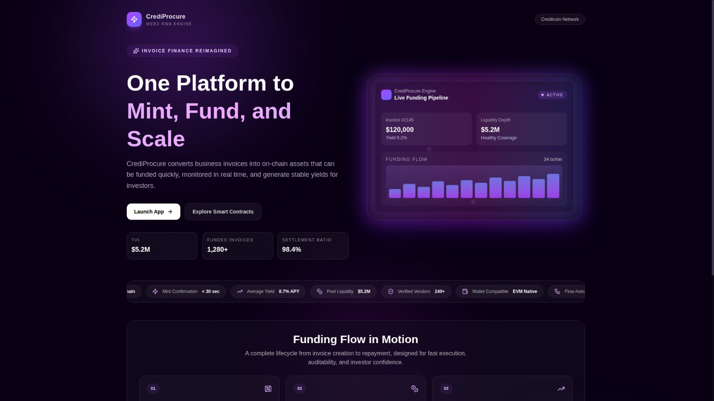
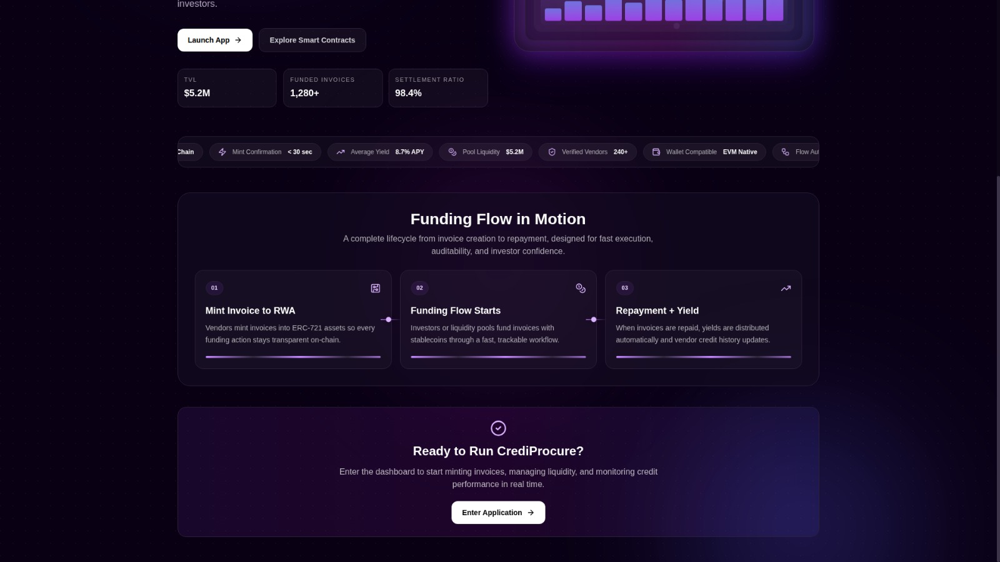
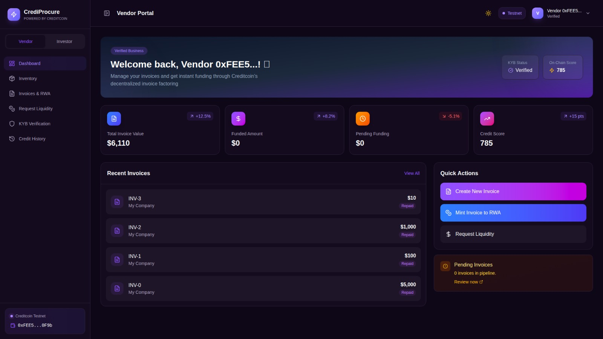
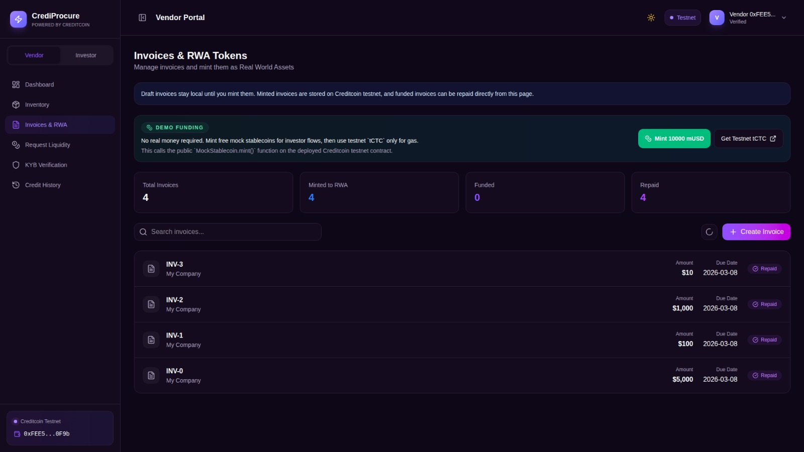
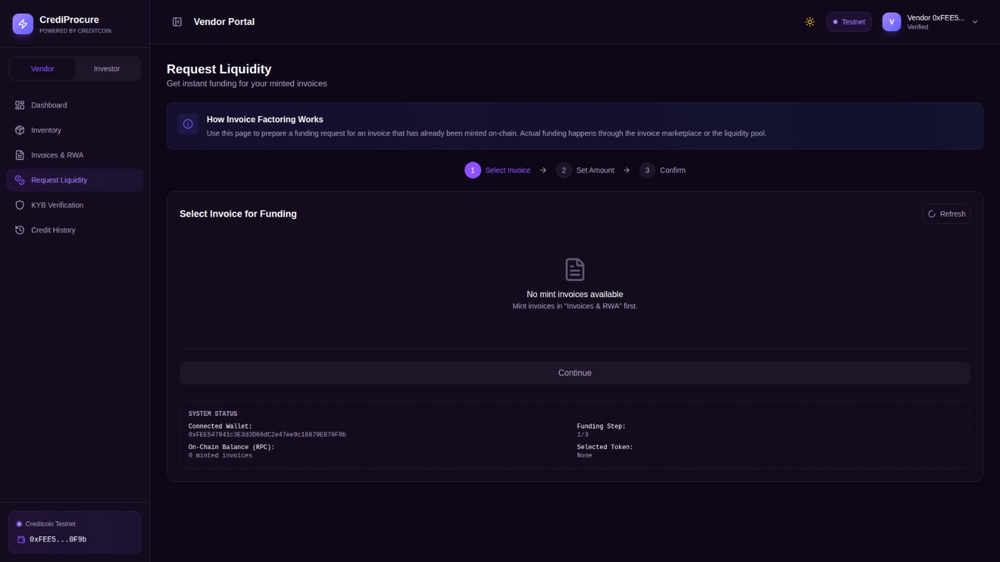
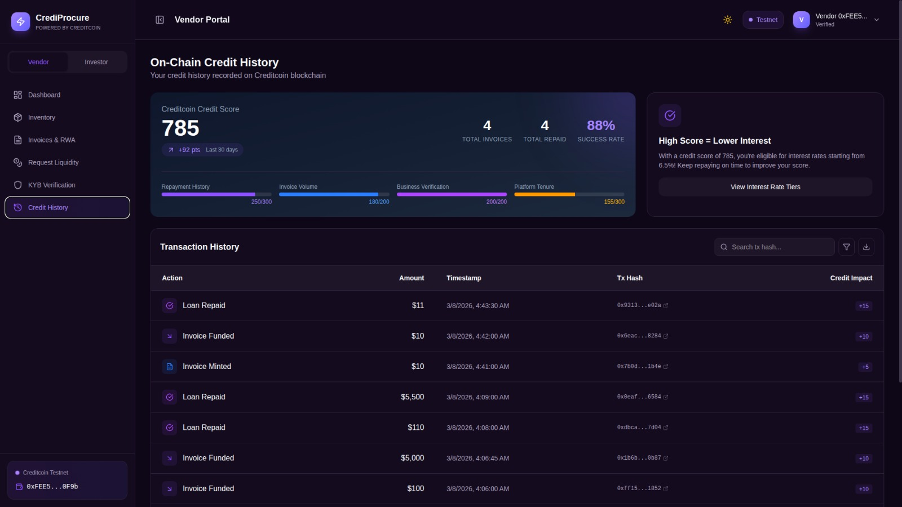
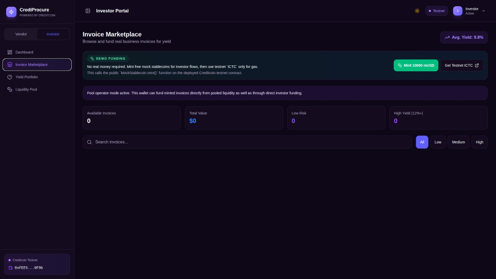
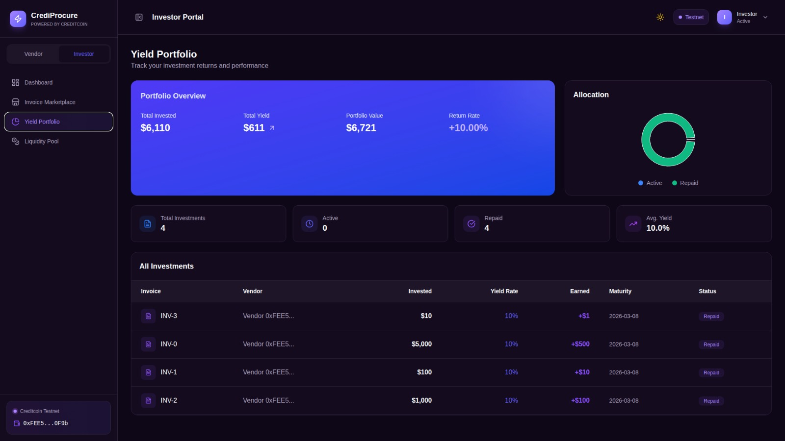

CrediProcure
On-chain B2B Invoice Financing via Real World Asset Tokenization on Creditcoin
CrediProcure is a decentralized finance protocol that converts business invoices into tokenized on-chain assets. The system enables vendors to access faster liquidity while offering investors transparent, event-driven yield exposure backed by real-world payment flows.
This document outlines the protocol design, contract architecture, data and lifecycle model, security assumptions, deployment status, and roadmap from testnet MVP to production readiness.
Table of Contents
- Abstract
- Introduction and Problem Statement
- Protocol Overview
- Architecture and Smart Contracts
- Data Model and Lifecycle
- Product Modules and User Flows
- Security and Risk Considerations
- Deployment and Validation Status
- Roadmap and Production Readiness
- Conclusion
- Appendix: Network and Contract References
1. Abstract
The global trade finance market continues to leave many small and medium enterprises underserved due to delayed settlements, high intermediation costs, and opaque underwriting systems. CrediProcure addresses this by tokenizing invoices as ERC-721 RWAs and enabling funding through direct investor participation and pooled liquidity rails. Repayment events update both investor performance views and vendor credit history records on-chain, providing transparent lifecycle accountability.
The current MVP is deployed on Creditcoin testnet with a functional frontend, deployed contracts, and end-to-end validation flow: create invoice, mint RWA, fund, and repay.
2. Introduction and Problem Statement
SMEs often face 30 to 90 day payment delays after delivering goods or services. Traditional invoice financing solutions can be difficult to access and frequently depend on opaque credit processes. Simultaneously, DeFi investors seek stable yield instruments with clearer links to real-world cash flows than purely speculative assets.
Estimated global trade finance gap.
Typical SME invoice settlement delay.
Primary borrower segment.
Target investor thesis for transparent yield.
Design goals
- Reduce time-to-liquidity for vendors through on-chain invoice funding rails.
- Provide transparent invoice lifecycle and repayment state to lenders.
- Support dual capital models: direct funding and pooled liquidity.
- Create a durable credit data trail for future risk scoring and underwriting.
3. Protocol Overview
CrediProcure bridges vendors and investors through invoice tokenization and smart contract-driven capital movement. Each invoice is represented as an ERC-721 token that carries core business terms, lifecycle status, and lender interaction history.
Vendor sets principal, due date, and yield terms.
Invoice is minted as ERC-721 token on Creditcoin.
Investor funds invoice directly or through pool capital.
Repayment updates credit history and yield accounting.
Participant roles
| Role | Primary Actions | Primary Incentive |
|---|---|---|
| Vendor (Borrower) | Create invoice, mint RWA, receive liquidity, repay principal and yield. | Faster working capital access and transparent funding path. |
| Investor (Lender) | Fund invoices directly, or deposit into liquidity pool. | Access to auditable RWA-backed yield opportunities. |
| Protocol | Track state transitions, enforce lifecycle flow, record events. | Trust-minimized, transparent settlement logic. |
4. Architecture and Smart Contracts
The protocol consists of three contracts deployed on Creditcoin testnet.
4.1 InvoiceNFT.sol
- ERC-721 invoice tokenization layer with enumerable support.
- Stores invoice terms and lifecycle state for each tokenized invoice.
- Supports invoice minting and lifecycle updates coordinated by pool logic.
4.2 LendingPool.sol
- Coordinates deposits, withdrawals, funding, and repayment handling.
- Supports direct invoice funding and pooled liquidity paths.
- Handles repayment distribution and event emission for analytics.
4.3 MockStablecoin.sol
- Test ERC-20 stablecoin for deterministic testnet demos.
- Used to simulate funding and repayment flows without real capital exposure.
4.4 Frontend and integration layer
- React + TypeScript + Ethers.js + Vite stack.
- Wallet integration across MetaMask, Phantom (EVM mode), and Bitget Wallet.
- Event-driven reads for marketplace, pool balances, and credit history.
5. Data Model and Lifecycle
5.1 Invoice state model
Each invoice token progresses through a deterministic state sequence. Critical transitions are event-emitting and observable in explorer and frontend analytics.
| State | Description | Transition Trigger |
|---|---|---|
| Created | Invoice terms prepared by vendor before minting. | Vendor creates draft. |
| Minted | Invoice exists as ERC-721 RWA on-chain. | `mintInvoice` call succeeds. |
| Funded | Capital allocated by investor or pool. | `fundInvoice` or `fundInvoiceDirect`. |
| Repaid | Principal and yield returned and recorded. | `repay` call confirmed. |
5.2 Credit and portfolio accounting
- Vendor credit history is computed from funding and repayment event traces.
- Investor portfolio views aggregate funded positions and realized repayment outcomes.
- This creates transparent historical records for future risk model upgrades.
6. Product Modules and User Flows
6.1 Landing and lifecycle narrative


6.2 Vendor experience modules




6.3 Investor experience modules


7. Security and Risk Considerations
7.1 Smart contract safeguards
- OpenZeppelin-based primitives for core token and access logic.
- Reentrancy controls for financial movement functions.
- Access control constraints on sensitive state transitions.
- Event-rich state updates for lifecycle auditability.
7.2 MVP assumptions and boundaries
- Current deployment is testnet-only and designed for evaluator verification.
- Some modules remain local-first for speed: draft workflows, inventory, KYB state.
- Formal audit is required before any production or mainnet rollout.
7.3 Risk framework evolution
Future releases will incorporate stronger underwriting primitives: invoice authenticity checks, repayment behavior scoring, and richer borrower profile signals.
8. Deployment and Validation Status
CrediProcure currently operates as an MVP on Creditcoin testnet with deployed contracts and a live frontend. The team validated the full protocol path in demo scenarios.
Validation summary
- Invoice creation and on-chain minting validated.
- Direct and pool-oriented investor funding flows validated.
- Repayment lifecycle and event-driven updates validated.
- Credit history and investor portfolio views synchronized with contract events.
9. Roadmap and Production Readiness
| Phase | Focus Area | Status |
|---|---|---|
| Phase 1 | Product UX and dual-portal foundation | Complete |
| Phase 2 | Core contract development and deployment | Complete |
| Phase 3 | Wallet integration and event-driven reads | Complete |
| Phase 4 | End-to-end testnet lifecycle validation | Complete |
| Phase 5 | Submission-grade documentation and deck assets | Complete |
| Phase 6 | Risk scoring, syndication, and analytics expansion | Next |
| Phase 7 | Mainnet readiness, compliance rails, and governance | Planned |
10. Conclusion
CrediProcure demonstrates a practical and testable RWA financing pattern where invoice-backed capital flows can be managed transparently on-chain. The protocol combines deterministic lifecycle logic, user-facing clarity, and deployable infrastructure suitable for structured evolution toward production-grade credit rails.
11. Appendix: Network and Contract References
| Item | Value |
|---|---|
| Network Name | Creditcoin Testnet |
| RPC URL | https://rpc.cc3-testnet.creditcoin.network |
| Chain ID | 102031 |
| Currency Symbol | tCTC |
| Explorer | https://creditcoin-testnet.blockscout.com/ |
| Contract | Address |
|---|---|
| InvoiceNFT | 0x6ab882c6C0e0c58B0487134b5221525B439C4C03 |
| LendingPool | 0x5fe9567496A8c101c062943ed152c78c3d80370a |
| MockStablecoin | 0x7a3817f06d99db5969110765660d05Aa4646285F |